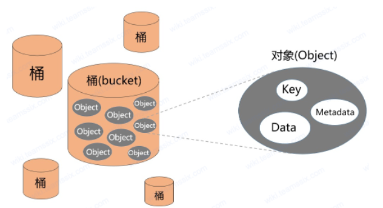

橄榄AWS！
目录
云服务相关组件
ref:https://wiki.teamssix.com/CloudService/S3/
由于各个云厂商对云服务的叫法不统一，这里就统一以AWS的分类来叙述。
AWS是什么？简单理解为亚马逊的云服务平台就行了。
S3 对象存储
起到云存储的作用，阿里云管这个叫OSS，都一样。也有不少厂商直接叫它云存储。
而AWS提供的对象存储服务是基于S3协议的，S3协议已成为业界标准，国内主流对象存储厂商都支持S3协议。
下图是对S3标准的一个描述。大致有三个部分：key、Data、Metadata，这三个部分都存储在Bucket里

Key：存储桶（Bucket）中某一个存储对象的的唯一标识符。“例如一个 URL 为：https://teamssix.s3.ap-northeast-2.amazonaws.com/flag，这里的 teamssix 是存储桶 Bucket 的名称，/flag 就是 Key”
Data：数据本体
Metadata：元数据，记录数据的标签、描述等信息，用于加速对象的排序、分类、查找。
EC2弹性计算
云上的虚拟机。简而言之可以理解为VPS。
一些名词的解释：
AMI： Amazon 系统映像，可以理解为创建VPS时所选的初始镜像。
RDS云数据库
顾名思义，云上的数据库。
那么对象存储和云数据库都是存储数据的，有什么区别呢？
对象存储更多面临的场景是非结构化的数据，比如文件、图片、视频。比如很多人就喜欢用阿里云oss搭建博客图床。 而云数据库直接提供如mysql、oracle等数据库的云上管理能力。
IAM身份和访问管理
放在云上的身份管理服务 举个形象的例子: 很多论坛都提供了一个第三方登录的接口，比如qq登录、微信登陆，点击应用图标即可自动登录进入应用，使用已被自动授权的功能。然后管理人员可以在管理后台统计员工的登录情况、使用情况。
针对各组件的攻击方式
S3对象存储
https://zone.huoxian.cn/d/907-aws-s3/5
大致分为： ·配置失误导致ACL或者存储对象内容可写入、或者信息泄露 ·key泄露直接接管 ·bucket可控后造成钓鱼、业务瘫痪 ·劫持网页存储在bucket中的js代码 ·bucket name 爆破
EC2 弹性计算服务
https://zone.huoxian.cn/d/1022-aws-ec2
大致也是围绕配置失误展开的，感觉拿到控制台一切都好说了